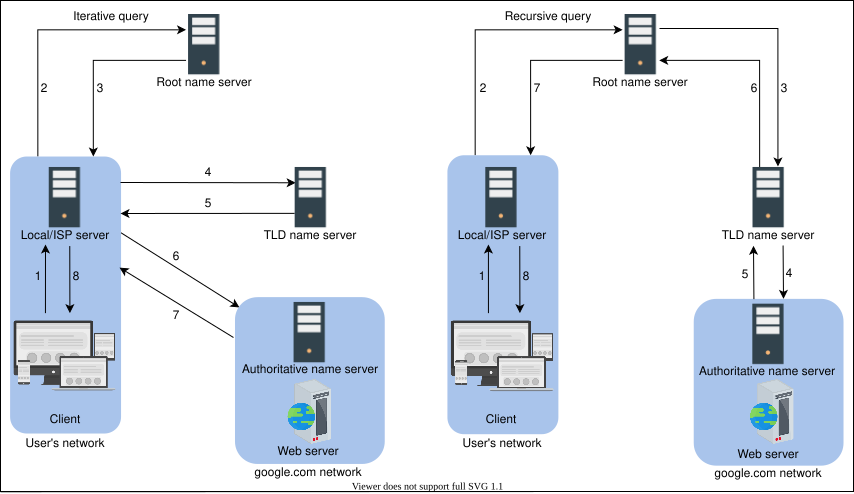

7. Domain Name System
Introduction to Domain Name System (DNS)
Introduction to Domain Name System (DNS)
Learn how domain names get translated to IP addresses through DNS.
We'll cover the following
The origins of DNS#
Let’s consider the example of a mobile phone where a unique number is associated with each user. To make calls to friends, we can initially try to memorize some of the phone numbers. However, as the number of contacts grows, we’ll have to use a phone book to keep track of all our contacts. This way, whenever we need to make a call, we’ll refer to the phone book and dial the number we need.
Similarly, computers are uniquely identified by IP addresses—for example, 104.18.2.119 is an IP address. We use IP addresses to visit a website hosted on a machine. Since humans cannot easily remember IP addresses to visit domain names (an example domain name being google.com), we need a phone book-like repository that can maintain all mappings of domain names to IP addresses. In this chapter, we’ll see how DNS serves as the Internet’s phone book.

What is DNS?#
The domain name system (DNS) is the Internet’s naming service that maps human-friendly domain names to machine-readable IP addresses. The service of DNS is transparent to users. When a user enters a domain name in the browser, the browser has to translate the domain name to IP address by asking the DNS infrastructure. Once the desired IP address is obtained, the user’s request is forwarded to the destination web server.
The slides below show the high-level flow of the working of DNS:
The entire operation is performed very quickly. Therefore, the end user experiences minimum delay. We’ll also see how browsers save some of the frequently used mappings for later use in the next lesson.
Important details#
Let’s highlight some of the important details about DNS, some of which we’ll cover in the next lesson:
-
Name servers: It’s important to understand that the DNS isn’t a single server. It’s a complete infrastructure with numerous servers. DNS servers that respond to users’ queries are called name servers.
-
Resource records: The DNS database stores domain name to IP address mappings in the form of resource records (RR). The RR is the smallest unit of information that users request from the name servers. There are different types of RRs. The table below describes common RRs. The three important pieces of information are type, name, and value. The name and value change depending upon the type of the RR.
Type | Description | Name | Value | Example (Type, Name, Value) |
A | Provides the hostname to IP address mapping | Hostname | IP address | (A, relay1.main.google.com,104.18.2.119) |
NS | Provides the hostname that is the authoritative DNS for a domain name | Domain name | Hostname | (NS, google.com, dns.google.com) |
CNAME | Provides the mapping from alias to canonical hostname | Hostname | Canonical name | (CNAME, google.com, server1.primary.google.com) |
MX | Provides the mapping of mail server from alias to canonical hostname | Hostname | Canonical name | (MX, mail.google.com, mailserver1.backup.google.com) |
- Caching: DNS uses caching at different layers to reduce request latency for the user. Caching plays an important role in reducing the burden on DNS infrastructure because it has to cater to the queries of the entire Internet.
- Hierarchy: DNS name servers are in a hierarchical form. The hierarchical structure allows DNS to be highly scalable because of its increasing size and query load. In the next lesson, we’ll look at how a tree-like structure is used to manage the entire DNS database.
Let's explore more details of the above points in the next lesson to get more clarity.
How the Domain Name System Works
How the Domain Name System Works
Understand the detailed working of the domain name system.
Through this lesson, we’ll answer the following questions:
- How is the DNS hierarchy formed using various types of DNS name servers?
- How is caching performed at different levels of the Internet to reduce the querying burden over the DNS infrastructure?
- How does the distributed nature of the DNS infrastructure help its robustness?
Let’s get started.
DNS hierarchy#
As stated before, the DNS isn’t a single server that accepts requests and responds to user queries. It’s a complete infrastructure with name servers at different hierarchies.
There are mainly four types of servers in the DNS hierarchy:
- DNS resolver: Resolvers initiate the querying sequence and forward requests to the other DNS name servers. Typically, DNS resolvers lie within the premise of the user’s network. However, DNS resolvers can also cater to users’ DNS queries through caching techniques, as we will see shortly. These servers can also be called local or default servers.
- Root-level name servers: These servers receive requests from local servers. Root name servers maintain name servers based on top-level domain names, such as
.com,.edu,.us, and so on. For instance, when a user requests the IP address of google.com, root-level name servers will return a list of top-level domain (TLD) servers that hold the IP addresses of the.iodomain. - Top-level domain (TLD) name servers: These servers hold the IP addresses of authoritative name servers. The querying party will get a list of IP addresses that belong to the authoritative servers of the organization.
- Authoritative name servers: These are the organization’s DNS name servers that provide the IP addresses of the web or application servers.
Point to Ponder
Question
How are DNS names processed? For example, will google.com be processed from left to right or right to left?
Iterative versus recursive query resolution#
There are two ways to perform a DNS query:
- Iterative: The local server requests the root, TLD, and the authoritative servers for the IP address.
- Recursive: The end user requests the local server. The local server further requests the root DNS name servers. The root name servers forward the requests to other name servers.
In the following illustration (on the left), DNS query resolution is iterative from the perspective of the local/ISP server:

Note: Typically, an iterative query is preferred to reduce query load on DNS infrastructure.
Caching#
Caching refers to the temporary storage of frequently requested resource records. A record is a data unit within the DNS database that shows a name-to-value binding. Caching reduces response time to the user and decreases network traffic. When we use caching at different hierarchies, it can reduce a lot of querying burden on the DNS infrastructure. Caching can be implemented in the browser, operating systems, local name server within the user’s network, or the ISP’s DNS resolvers.
The slideshow below demonstrates the power of caching in the DNS:
Note: Even if there is no cache available to resolve a user’s query and it’s imperative to visit the DNS infrastructure, caching can still be beneficial. The local server or ISP DNS resolver can cache the IP addresses of TLD servers or authoritative servers and avoid requesting the root-level server.
DNS as a distributed system#
Although the DNS hierarchy facilitates the distributed Internet that we know today, it’s a distributed system itself. The distributed nature of DNS has the following advantages:
- It avoids becoming a single point of failure (SPOF).
- It achieves low query latency so users can get responses from nearby servers.
- It gets a higher degree of flexibility during maintenance and updates or upgrades. For example, if one DNS server is down or overburdened, another DNS server can respond to user queries.
There are 13 logical root name servers (named letter A through M) with many instances spread throughout the globe. These servers are managed by 12 different organizations.
Let’s now go over how DNS is scalable, reliable, and consistent.
Highly scalable#
Due to its hierarchical nature, DNS is a highly scalable system. Roughly 1,000 replicated instances of 13 root-level servers are spread throughout the world strategically to handle user queries. The working labor is divided among TLD and root servers to handle a query and, finally, the authoritative servers that are managed by the organizations themselves to make the entire system work. As shown in the DNS hierarchy tree above, different services handle different portions of the tree enabling scalability and manageability of the system.
Reliable#
Three main reasons make the DNS a reliable system:
- Caching: The caching is done in the browser, the operating system, and the local name server, and the ISP DNS resolvers also maintain a rich cache of frequently visited services. Even if some DNS servers are temporarily down, cached records can be served to make DNS a reliable system.
- Server replication: DNS has replicated copies of each logical server spread systematically across the globe to entertain user requests at low latency. The redundant servers improve the reliability of the overall system.
- Protocol: Although many clients use DNS over unreliable user datagram protocol (UDP), UDP has its advantages. UDP is much faster and, therefore, improves DNS performance. Furthermore, Internet service’s reliability has improved since its inception, so UDP is usually favored over TCP. A DNS resolver can resend the UDP request if it didn’t get a reply to a previous one. This request-response needs just one round trip, which provides a shorter delay as compared to TCP, which needs a three-way handshake before data exchange.
Point to Ponder
Question
What happens if a network is congested? Should DNS continue using UDP?
Consistent#
DNS uses various protocols to update and transfer information among replicated servers in a hierarchy. DNS compromises on strong consistency to achieve high performance because data is read frequently from DNS databases as compared to writing. However, DNS provides eventual consistency and updates records on replicated servers lazily. Typically, it can take from a few seconds up to three days to update records on the DNS servers across the Internet. The time it takes to propagate information among different DNS clusters depends on the DNS infrastructure, the size of the update, and which part of the DNS tree is being updated.
Consistency can suffer because of caching too. Since authoritative servers are located within the organization, it may be possible that certain resource records are updated on the authoritative servers in case of server failures at the organization. Therefore, cached records at the default/local and ISP servers may be outdated. To mitigate this issue, each cached record comes with an expiration time called time-to-live (TTL).
Point to Ponder
Question
To maintain high availability, should the TTL value be large or small?
Test it out#
Let’s run a couple of commands. Click on the terminal to execute the following commands. Copy the following commands in the terminal to run them. Study the output of the commands:
nslookup www.google.comdig www.google.com
Click to Connect...
The following slide deck highlights some important aspects of nslookup and dig output.
Let’s go through the meaning of the output:
The nslookup output#
-
The
Non-authoritative answer, as the name suggests, is the answer provided by a server that is not the authoritative server of Google. It isn’t in the list of authoritative nameservers that Google maintains. So, where does the answer come from? The answer is provided by second, third, and fourth-hand name servers configured to reply to our DNS query—for example, our university or office DNS resolver, our ISP nameserver, our ISP’s ISP nameserver, and so on. In short, it can be considered as a cached version of Google’s authoritative nameservers response. If we try multiple domain names, we’ll realize that we receive a cached response most of the time. -
If we run the same command multiple times, we’ll receive the same IP addresses list but in a different order each time. The reason for that is DNS is indirectly performing load balancing. It’s an important term that we’ll gain familiarity with in the coming lessons.
The dig output#
-
The
Query time: 4 msecrepresents the time it takes to get a response from the DNS server. For various reasons, these numbers may be different in our case. -
The
300value in theANSWER SECTIONrepresents the number of seconds the cache is maintained in the DNS resolver. This means that Google’s ADNS keeps a TTL value of five minutes (60300 sec).
Note: We invite you to test different services for their TTL and query times to strengthen your understanding. You may use the above terminal for this purpose.
Point to Ponder
Question
If we need DNS to tell us which IP to reach a website or service, how will we know the DNS resolver’s IP address? (It seems like a chicken-and-egg problem!)